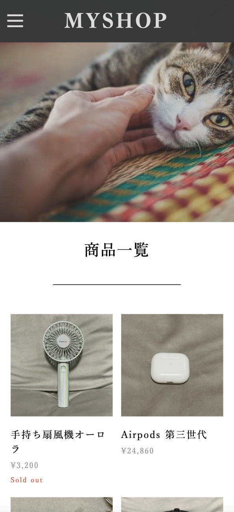

work
ECサイト
2022
nunjucksを使い、家にあるものを商品として並べてECサイトを製作しました。

デザイン
商品を大きく見やすいように3つに並べて表示しました。
また高級感を感じさせる色合いや画像を使い、制作をしました。
個別ページでは画像をクリックすると画像を切り替えられるようにしました。
左右に分け、商品の情報が見やすいようにしました。
使用ツール
- ・Nunjucks: ループさせたり、ifを使いました。
- ・Visual Stadio Code: VSCodeを使い制作をしました。
- ・HTML: クラス命名を気をつけました。
- ・CSS: 間隔や色合いなどを気をつけてデザインしました。
- ・JavaScript: 画像の切り替えやもっと見るボタンを可能にしました。
- ・json: jsonの中に商品情報を入れ、取得して表示させました。
工夫した点
ハンバーガーメニューを左側に設置して、クリックをすると下にメニューが表示されるものを使いました。
コピー&ペーストではなく、見ながら理解をするために一つずつ書いてやりました。
まとめ
モバイルにも対応しています。
もっと見るボタンを押して商品をもっと表示させるようにしました。
このECサイトはデモですがデザインを考えたり、機能をつけたりする
作業がとても面白く楽しくてまた一つレベルを上げれたと思いました。